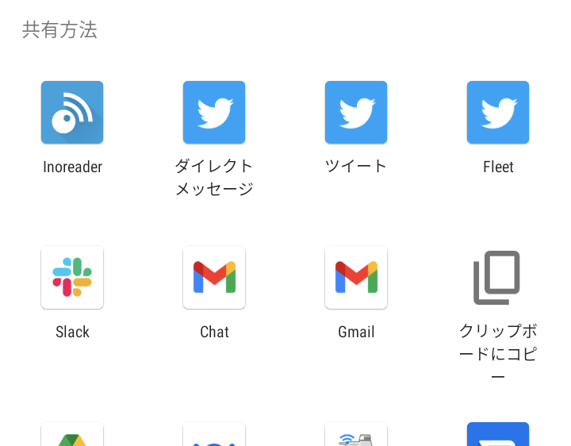
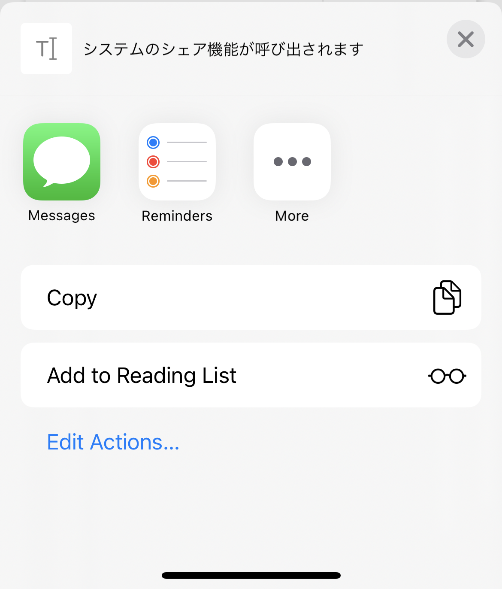
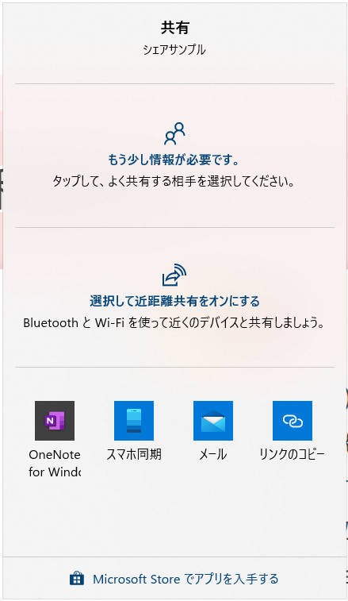
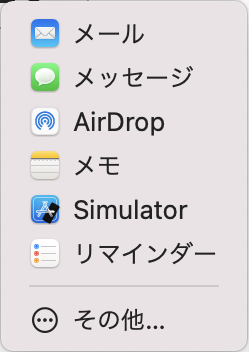

Web Share API
システムのシェア機能を利用する




[Draft]
NG: Chrome(Mac), Firefox
Web Share APIは、ブラウザからシステムのシェア機能を呼び出します。
なのでWebページによくあるtwitterやfacebookのシェアボタンの代わりになるものでは無いですが、ユーザーによってはそれ以上に使い慣れて機能的なメニューとなる場合もあるかもしれません。
割と以前からあるAPIで、特にモバイルは先んじてサポートされていましたが、今でもPCでのサポートが進みつつあります。
ちなみにこちらがAndroidのメニュー例、そしてiOS、Windows、macOS。
firefoxやmacのchromeはまだ対応していません。